Amadeus
Main Content
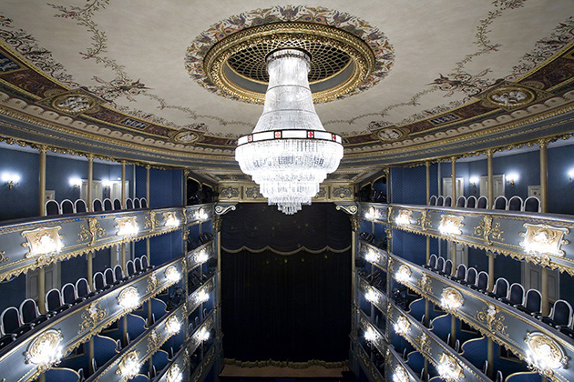
Peter Shaffer adapts his own stage play – a fantasia on the supposed envy held by court composer Antonio Salieri for the brattish genius Wolfgang Amadeus Mozart – which was filmed almost entirely in real castles and palaces in Prague and throughout the Czech Republic.
Only four sets were built for the movie – the Volkstheater, where Schikanader (Simon Callow) stages a surreal pastiche of Mozart's work; Salieri’s hospital room; the interior of Mozart’s apartment; and the staircase where he meets his father, at Prague’s Barrandov Studios. The famous studios, in the suburb of Hlubocepy, were founded in 1933 by President Vaclav Havel’s uncle Milos.
The relatively unchanged Staré Mesto (Old Town) and Malá Strana (Lesser Town) of Prague stand in for 18th century ‘Vienna’.
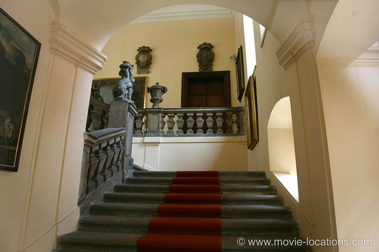
Malá Strana, to the west, reached by the Charles Bridge (Karluv Most) over the Vltava River, is the first stop.
The interior of Salieri's (F Murray Abraham) home, where the older composer is discovered by servants after attempting suicide, is Maltézské pomoc, Lazenska 2, Malá Strana, the former Palace of the Grand Prior of the Knights of Malta. For a while, this housed Prague’s Museum of Musical Instruments but it’s now home to the Anglo-American College, a private liberal arts college and not open to the public.
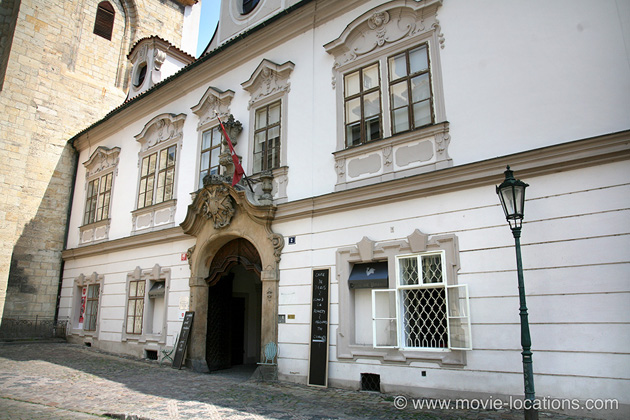
A little to the northeast of the Knights' Palace, the injured Salieri is rushed through the streets of old 'Vienna', represented by Misenska, a narrow, curved cobbled street running west from U Lužického semináře.
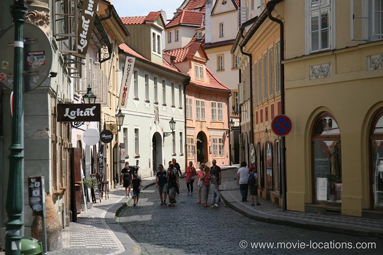
The hospital in which he's incarcerated and where he confesses all to the flummoxed young priest, is Za Invalidovnou 579/3, in the Karlin district to the northeast of the Old Town.
The complex was built in 1737 based on the idea of Les Invalides in Paris, to house invalided war veterans and gives its name to the local metro station, Invalidovna.
In 1935, the patients were moved to another facility and the building taken over for use by the Czech army, but after being damaged by the disastrous flood of 2002 it was closed and shuttered, until extensive renovations can be carried out.
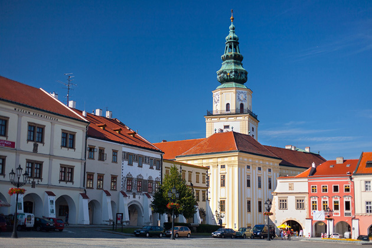
The story flashes back to Salieri's first encounter with Mozart (Tom Hulce), when he sets himself the goal of recognising the the young prodigy at a concert given by the Prince Archbishop Colloredo of Salzburg. The lavish interior of the Prince's palace is the Baroque Kromeriz Castle, northern Moravia in the eastern part of the Czech Republic, the one-time residence of bishops and archbishops of Olomouc in Moravia.
The castle’s Audience Chamber was also used in another classical biopic, 1994's Immortal Beloved, with Gary Oldman as Beethoven. The palace and its gardens are open for guided tours.
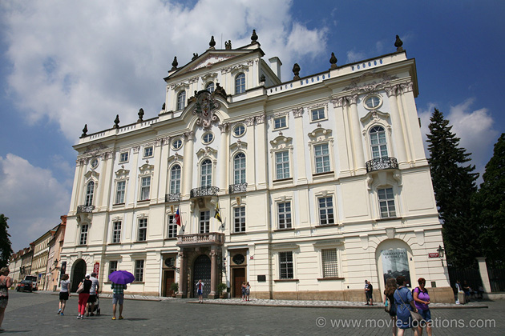
The palace of Vienna's Emperor Joseph II (Jeffrey Jones) is the restored Archbishop’s Palace (Arcibiskupsky Palác, formerly Gryspek Palace) on Hradcanské námestí (Hradcany Square), the residence of Prague's archbishops since 1562.
Originally a Renaissance mansion, it was bought by Ferdinand I from the Royal Private Secretary – Florian von Gryspek – and presented to the Catholic Archbishop of Prague. During the 16th century it was rebuilt and extended before being remodelled in the Baroque style between 1675 and 1688. In 1764 Johan Joseph Wirch reworked it into Rococo style and decorated the interior in sumptuous splendour. It's the HQ of the Catholic Church in Prague and not open to the public.
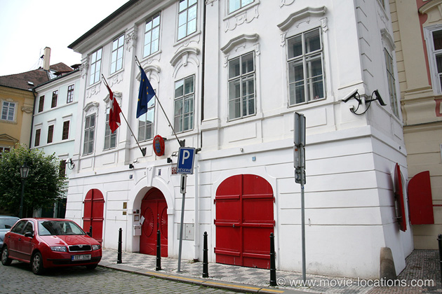
The excitable Mozart gets a little too enthusiastic when trying on a selection of extravagant wigs. Oddly, this 'wigmaker shop' is Prague's Danish Embassy, Maltezske nam 5, a little west of the Knight's Palace.
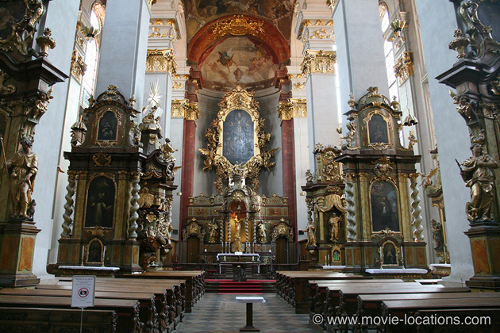
Finally, to the Old Town itself where Mozart, against his father's wishes, marries Constanze in Kostel svateho Jilji (Church of St Giles), Husova 17 – easily overlooked, being tucked away in the maze of tiny streets south of Staroměstské náměstí, the Old Town Square.
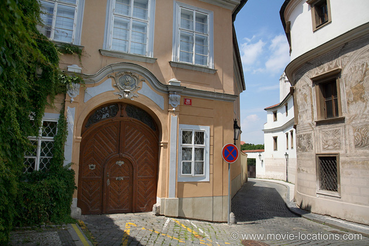
It's back to Malá Strana and the northwest corner of Hradcanské námestí, where a golden sunburst was added over the nautical coat-of-arms above the door at Kanovnická 2, to become the home of Wolfgang and Constanze.
You can briefly glimpse Mozart's real house in Vienna in in Liliana Cavani's perverse 1974 drama The Night Porter, with Dirk Bogarde and Charlotte Rampling.
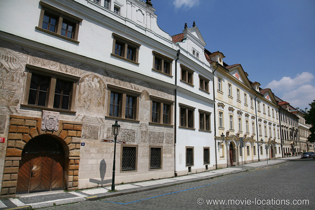
The beautifully unchanged houses along the north side of Hradcanské námestí provide the suitably period approach to their house.
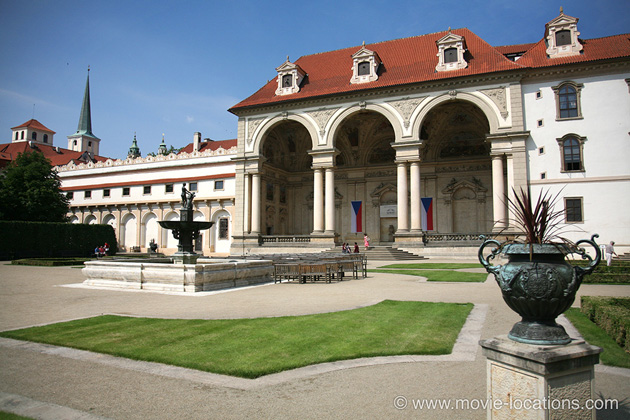
Mozart's open-air concert for the Pope was filmed at the Wallenstein Gardens of Valdštejnský palác (Wallenstein Palace), Valdstejnske nam 4. This vast palace complex, the first monumental early Baroque secular building in Prague, was built in 1630 for one of the most powerful and wealthy Czech noblemen of the period, Albrecht von Wallenstein. Today it is the seat of the Czech Senate, and the gardens are open to the public.
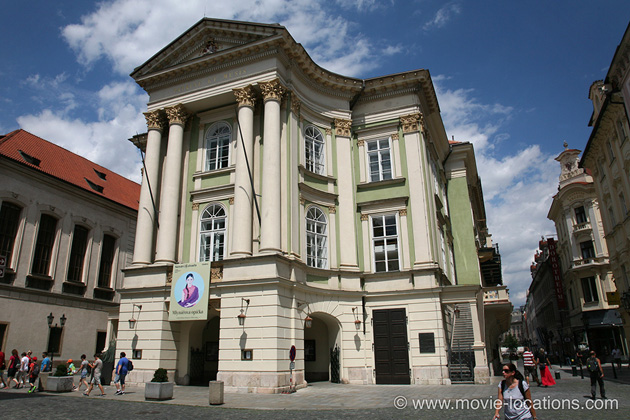
The opera performances – Seraglio, Marriage of Figaro and Don Giovanni – were filmed in the unchanged Prague Estates Theatre (formerly the Tyl Theatre), Zelezna ulice 11 (Zelezna Street) at Havirska Street in Staré Mesto southeast of the Old Town Square. Built in 1783 for Count Anton von Nostitz-Rieneck, as the Nostitz Theatre, it became the German Theatre in the mid-19th century until 1945, when it was renamed for Czech dramatist and actor Josef Kajetan Tyl.
During his lifetime, Mozart was always more appreciated in Prague than in Vienna, and the composer actually staged the première of Don Giovanni at the Estates, on 29 October 1787. The theatre is featured again in Rob Cohen’s adrenaline-fuelled XXX.
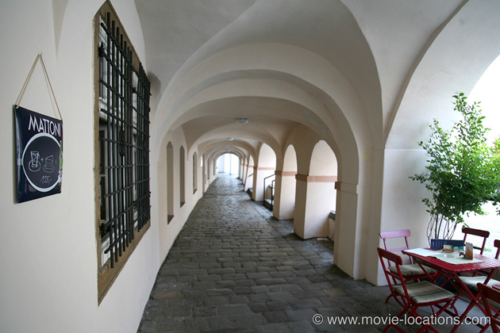
The increasingly bitter Salieri plots a terrible punishment for the man he perceives as God's favourite. The low, arched passageway through which Salieri walks to visit Mozart can be seen on the eastern side of Maltézské nám, just south of Lazenska – directly opposite the Danish Embassy location. It now houses smart terrace cafes.
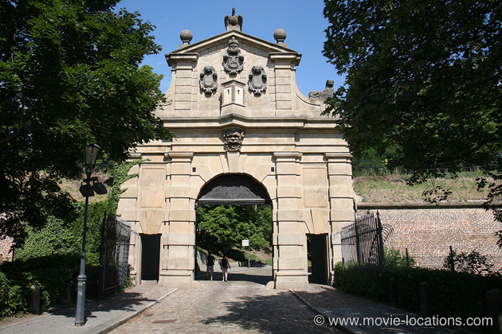
When Salieri's cruel scheme comes to its conclusion, the body of Mozart leaves the city via the Leopold Gate,128 00 Vyšehrad, to be an unceremoniously dumped into a paupers' mass grave. The Gate, dating from 1672, is part of Vyšehrad (Upper Castle), a historic fort south of the city abandoned as a royal home in the 14th Century when Prague Castle was built on the other side of the Vltava River.
It was remodelled in the Baroque style and, around 1840, was adjusted to operate as a drawbridge – you can see the double pulley holes, with which the bridge was controlled.
Visit Info
Visit The Film Locations
Czech Republic
Visit: Czech Republic
Visit: Prague
Flights: Václav Havel Airport Prague, Aviatická, 161 08 Praha 6 (tel: 420.220.111.888)
Visit: Prague Estates Theatre, Železná ulice / Ovocný trh, Praha 1 (tel: 420.224.901.448)
Visit: Kromeriz Castle, Sněmovní nám. 1, 767 01 Kroměříž (tel: 420.573.502.011)